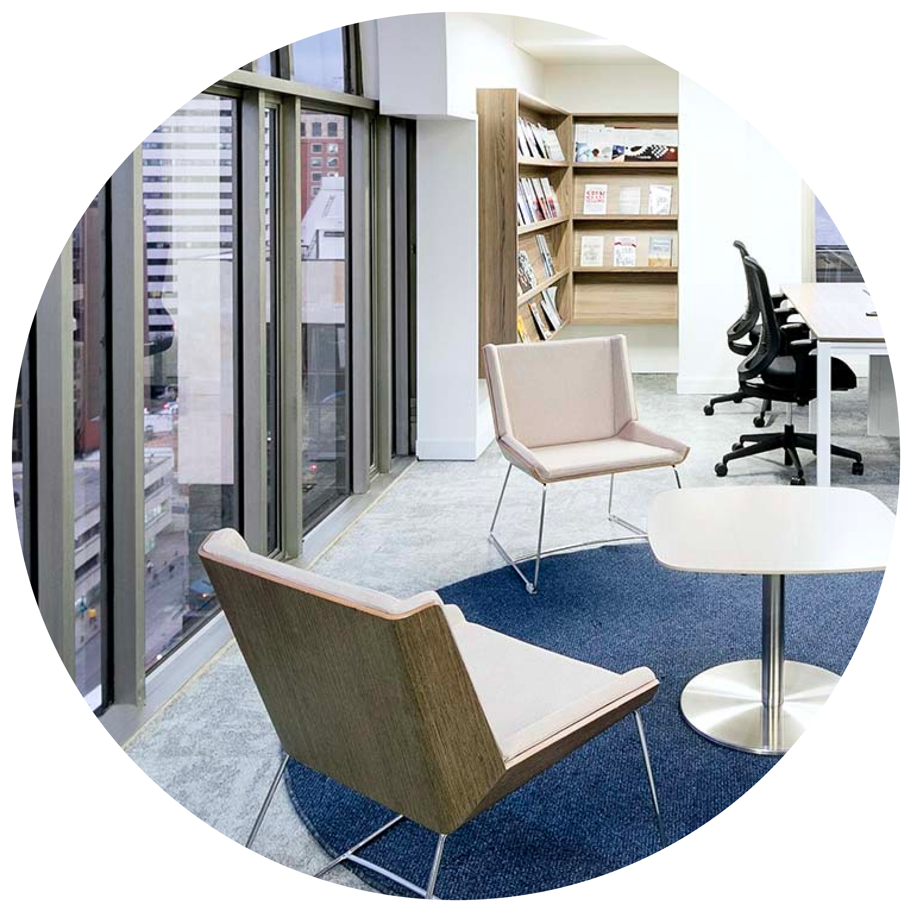
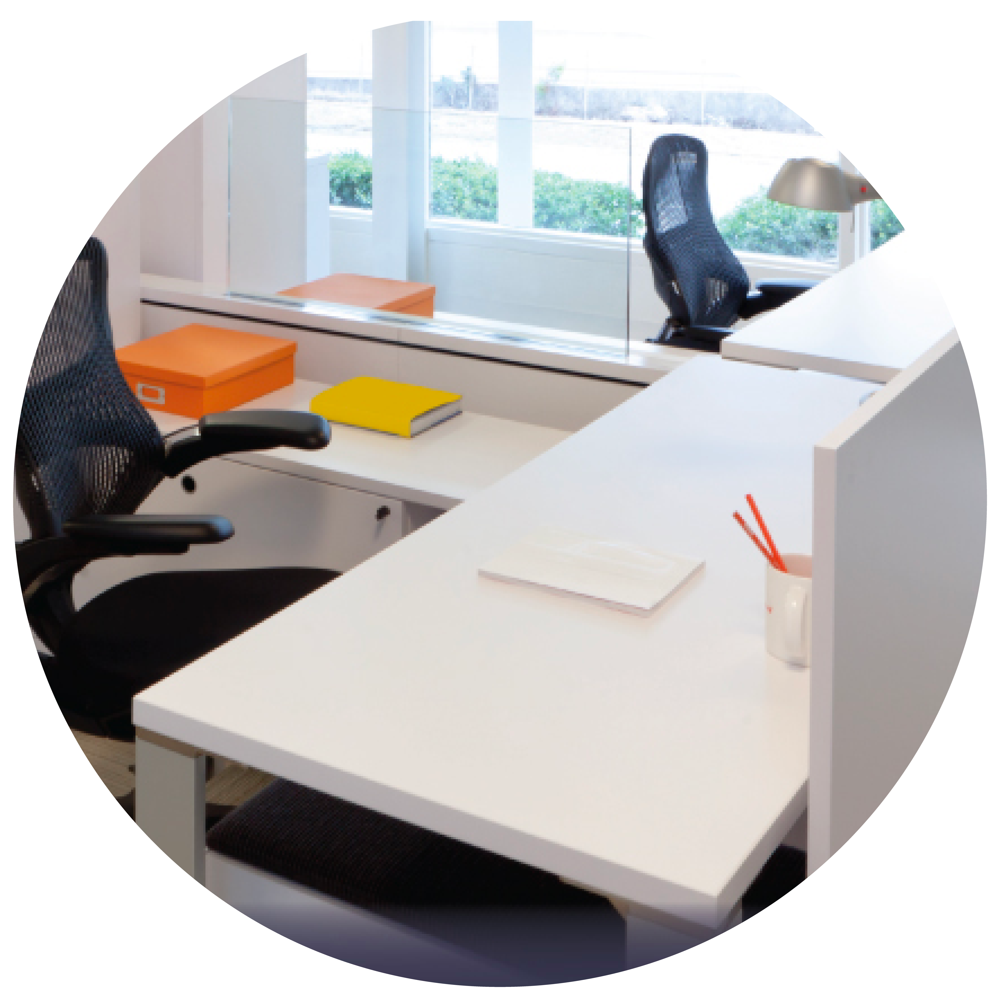

In this recurring post, I highlight some of the best thought-leadership articles and reports that cross my desk. I note why they rise to the top of the pile and are worth reading (or skimming), even if they focus on functions or industries outside your areas of interest. Among the criteria I use to make the selections are freshness and provocativeness of insights and timeliness, analytical rigor, depth of prescriptions, and overall readability.
The future of work and the workplace is a major theme for thought leadership among professional-services firms, especially as more people are vaccinated against COVID-19. In recent months, firms have addressed topics ranging from the implications of hybrid work for real estate to the impact of the pandemic on women in the workforce. But the torrent of articles is making it increasingly hard for firms to distinguish themselves in the marketplace. Nonetheless, several articles and reports stand out.
Back to top

No going back: The world of work resets”
Kearney
This piece from Kearney unapologetically emphasizes cost savings that the new world of work might enable for companies. The authors explore reduced recruitment and retention costs, optimization of office space (suggesting that employees will come to the office to collaborate with their teams but stay home to do work that requires quiet and concentration), and the extent to which employees will end up covering more corporate operational costs because they will be working from home. They note that Kearney’s clients expect a drop in operational costs, including energy and travel, of up to 50 percent in postpandemic times.
Decoding global ways of working
Boston Consulting Group
The Boston Consulting Group and its research partner The Network surveyed 209,000 people in 190 countries on their work preferences, including remote work. Among the interesting findings is the enthusiasm for remote work by country—the Philippines is first in preference for all-remote work, while Denmark is last. Overall, nine in ten people around the world said they want to work remotely at least some of the time. But only one in four said they want to switch to a completely remote model. And the desire to work remotely is not limited to knowledge workers. People in social care, services, and manufacturing all expressed interest in remote work, although it may be not be realistic, given the nature of the jobs.
The future of work after COVID-19
McKinsey & Company
Authors at the McKinsey Global Institute, the research arm of McKinsey & Company, produced a lengthy report on the impact of the pandemic on labor demand, occupational mix, and workforce skills needed in eight countries—China, France, Germany, India, Japan, Spain, the United Kingdom, and the United States.
In particular, it addressed the extent to which remote work would persist after the pandemic by analyzing 2,000 tasks in about 800 occupations in the eight countries. “We find that about 20 to 25 percent of the workforces in advanced economies could work from home between three and five days a week,” the report concluded, or “four to five times more remote work than before the pandemic.” The level of detail and analysis makes this report the strongest contribution I’ve seen on the future of work by a professional-services firm.
Virtually possible: Getting remote work right for G&A functions”
McKinsey & Company
This article from McKinsey & Company offers an excellent example of how to narrow the scope of the work-from-home discussion. The authors identify four role archetypes within a company’s general and administrative (G&A) functions, evaluate opportunities and risks of remote-work arrangements, and describe models for the archetypes to help companies determine the best path forward. They base the archetypes—locally deployed, business partnering, centers of excellence, and shared-service centers—on the nature, frequency, location, and complexity of interactions that G&A employees have with other company staff. The level of detail gives the intended audience (chief human resources officers, for example) something substantive to reflect on and, perhaps, motivates them to contact the authors.
Is your company ready for the future of hybrid work?”
Spencer Stuart
This author from Spencer Stuart, an executive search firm, looks at the issues that a hybrid work environment—which many companies will adopt postpandemic—may raise. In particular, the writer addresses four areas:
“Hybrid or blended work is likely going to become the norm for many organizations,” the author concludes. “Companies that try to ‘go back to normal’ will not succeed.”


“
“
“
Equity, psychological safety, and inclusion: “The risk is the hybrid environment where you lose the real benefits of being together and create a two-class system in the meeting where people on screen aren’t really participating as fully,” said Jane Datta, CHRO of NASA.
Burnout: “In a world that often treats being busy and stressed as a status symbol, leaders are charged with modeling healthier behavior themselves to bring about real culture change.”
Innovation: In a survey, more than one-third of respondents said innovation had been hurt by the shift to remote work. However, “this environment has forced others to be more creative.”
Remote onboarding: Onboarding new employees was the single factor most negatively affected by virtual work, according to the survey mentioned above. But much of the onboarding of new employees may continue to be virtual in a hybrid world, so companies must adapt to it.
•
•
•
•